Name: L. Guna
Roll No: CS24B2043
Course: Applied Data Science
Project Title: Diabetes Risk Prediction Using Logistic Regression and SVM
This report presents an analysis and predictive modeling study performed on the Pima Indians Diabetes dataset. The goal is to explore the dataset through descriptive analytics and build machine learning models that predict diabetes outcome. The study demonstrates the use of two algorithms not covered in classroom instruction: Logistic Regression and Support Vector Machine (SVM). The results help highlight factors influencing diabetes risk and evaluate model effectiveness.
The main objectives of this work are:
The dataset contains 768 instances and 9 attributes. The target column "Outcome" is binary (0 = non-diabetic, 1 =
diabetic). The input features include:
Pregnancies, Glucose, BloodPressure, SkinThickness, Insulin, BMI, DiabetesPedigreeFunction, Age.
The dataset includes medical measurements often associated with metabolic health and diabetes risk.
diabetes_project/
main.py
Problem_Statement.txt
Final_Report.html
Final_Report.pdf
README.txt
requirements.txt
data/diabetes.csv
results/(all plot images)
The dataset is loaded and basic descriptive statistics are printed. Various exploratory plots are
generated to understand feature distributions, outliers, correlation, and class balance. All input features are
standardized using a simple scaling step, and the data is then split into training and test sets using a
standard 80:20 split.
Two models are trained:
Logistic Regression: a linear probability classification model based on sigmoid transformation and maximum
likelihood.
Support Vector Machine: finds the optimal separating hyperplane maximizing margin between classes.
Both models are evaluated using accuracy, confusion matrix, classification report, and ROC-AUC. Additional visualization plots help compare models and show feature relationships.
Logistic Regression is a binary classification algorithm that models the probability of an outcome using the logistic (sigmoid) function. The model estimates coefficients for each input feature and outputs a probability between 0 and 1. A threshold (usually 0.5) determines the final predicted class. It is interpretable and effective when the relationship between features and output is approximately linear.
SVM is a classification algorithm that identifies the best separating hyperplane to divide classes with the maximum possible margin. By maximizing the distance between support vectors and the separating boundary, SVM improves generalization. In this project, a linear kernel is used for simplicity. SVM focuses on the most influential data points near the boundary.
Standard evaluation metrics are computed including accuracy, precision, recall, and F1-score. ROC-AUC curves visualize the ranking performance of both models. Confusion matrix heatmaps indicate correct vs incorrect classifications. Comparing model results helps determine which model performs better on this dataset.
After training the models and evaluating them on the test set, the numerical values of accuracy, precision,
recall, F1-score and AUC are reported from the Python output. These values, along with the confusion matrices
and ROC curves, are used to compare Logistic Regression and SVM.
In our run, Logistic Regression achieved an accuracy of 78.57% and SVM achieved an accuracy of 79.22%.
Missing values chart shows no null entries in the dataset. However, some measurements such as blood pressure having a value of zero are likely to be invalid rather than true zeros, and they behave like hidden missing values.
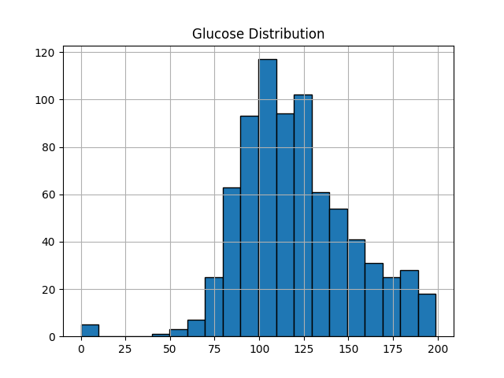The glucose histogram shows right-skewed distribution indicating many high-glucose cases which strongly relate to diabetes outcome.
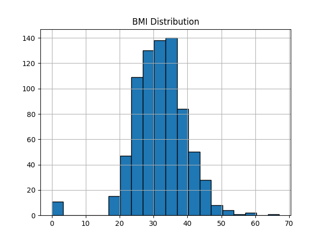BMI distribution shows slight right skew with most values in normal to overweight range.
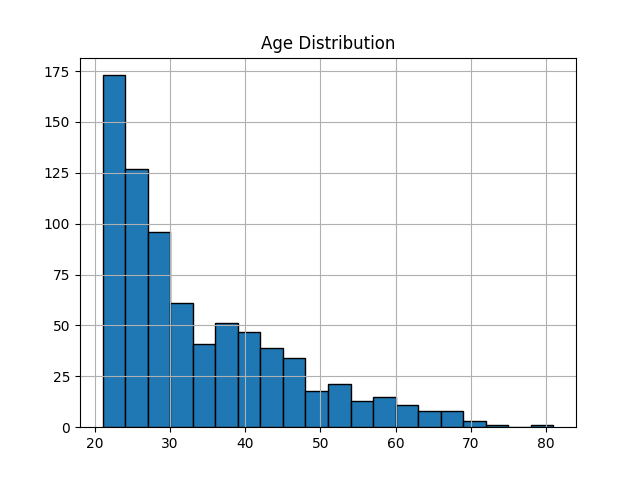Age distribution shows younger population majority with decreasing frequency in older age groups.
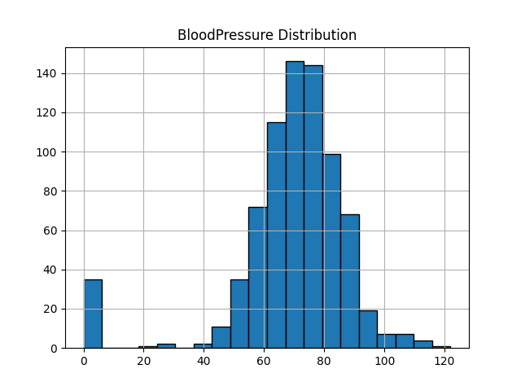Blood pressure distribution appears roughly normal with some outliers at zero indicating missing or invalid measurements.
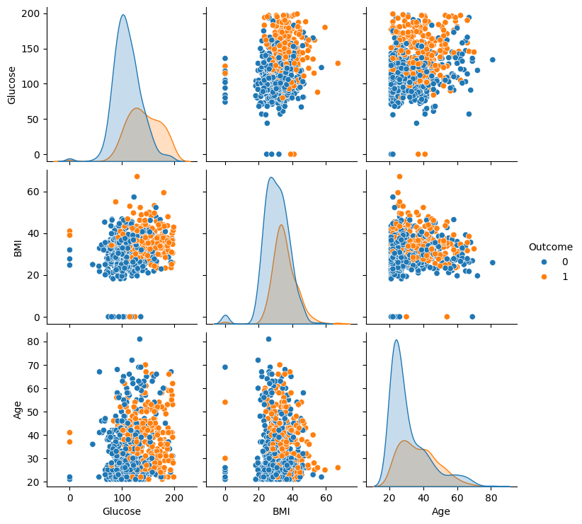Pairplot shows feature relationships with Glucose and BMI showing clear separation between outcome classes.
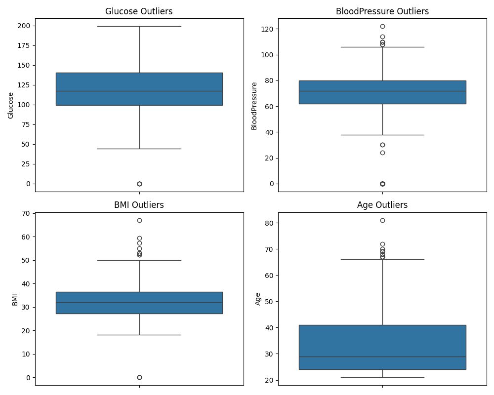Boxplots identify outliers in Glucose, BloodPressure, BMI, and Age with several extreme values present.
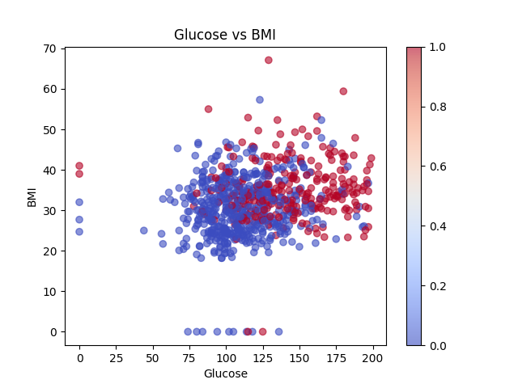Scatter plot of Glucose vs BMI colored by outcome shows diabetic cases concentrated in higher glucose and BMI regions.
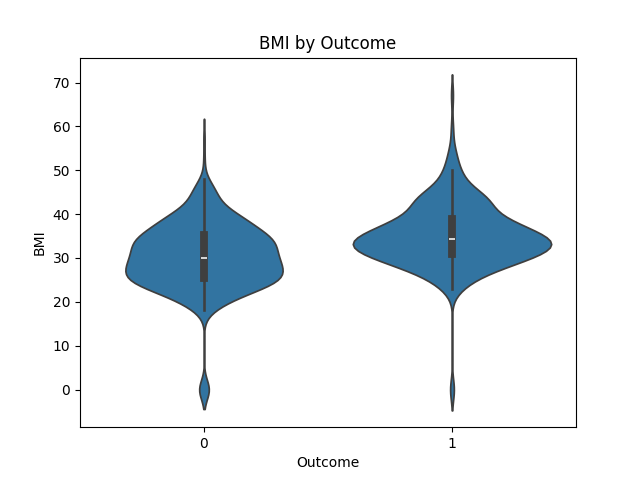Violin plot shows BMI distribution is higher for diabetic patients compared to non-diabetic.
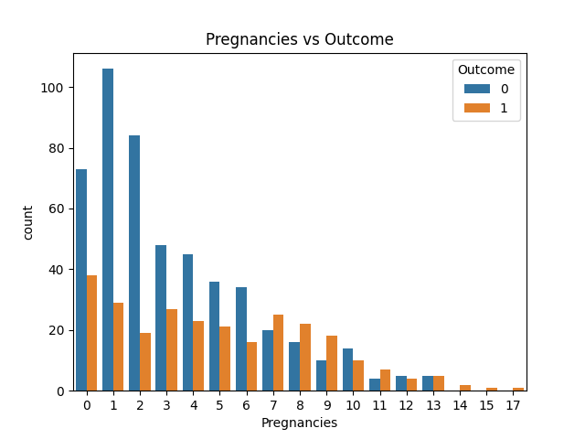Countplot shows pregnancy count relationship with outcome indicating higher pregnancy count may correlate with diabetes risk.
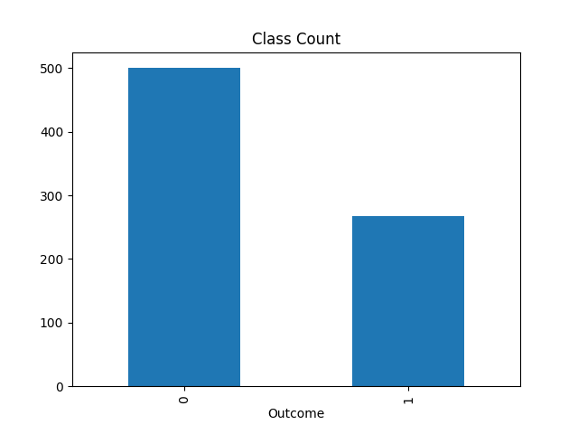Class count plot shows dataset imbalance with majority class being non-diabetic.
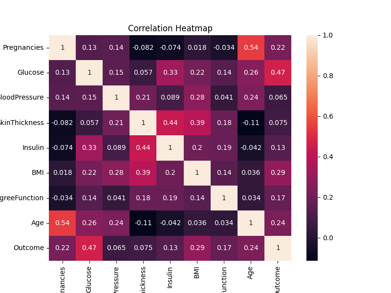The correlation heatmap highlights Glucose and BMI as strongly related to diabetes.
Logistic Regression coefficients show Glucose has highest positive influence on diabetes prediction.
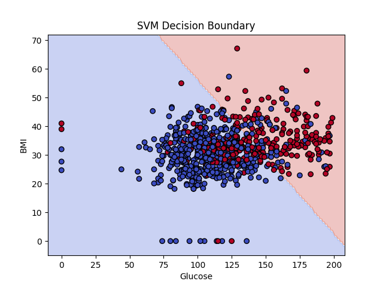SVM decision boundary visualization using Glucose and BMI shows linear separation between classes.
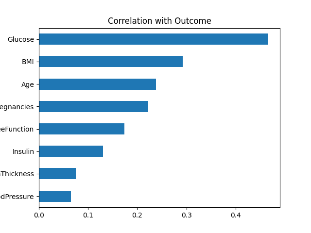Sorted correlation bar chart shows Glucose has strongest positive correlation with outcome.

Mean feature values grouped by class show diabetic patients have higher average values for most features.
Confusion matrix for Logistic Regression shows good true negative rate but moderate false negative rate.
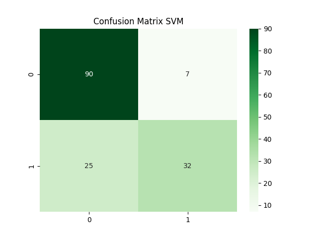Confusion matrix for SVM shows slightly better performance than Logistic Regression with fewer false negatives.
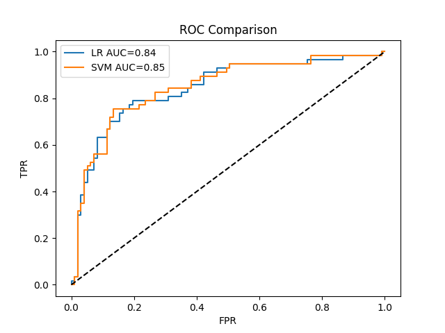ROC curves comparison shows both models perform similarly with SVM having slightly higher AUC.
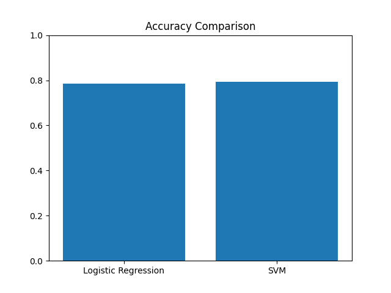Accuracy comparison chart shows SVM achieves marginally higher accuracy than Logistic Regression.
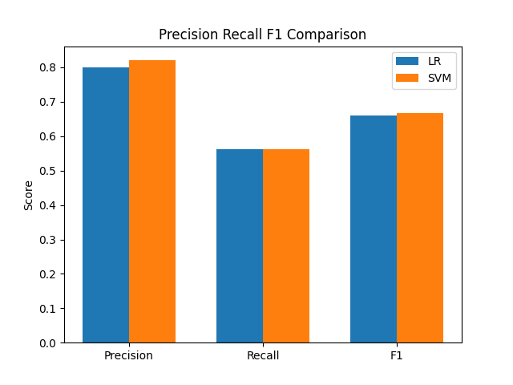Precision-Recall-F1 score bar graphs show both models have similar precision but SVM has slightly better recall.
Both Logistic Regression and SVM perform reasonably well for diabetes classification. Logistic Regression is simpler and more interpretable, whereas SVM provides a maximum-margin boundary that sometimes yields higher recall. Glucose and BMI were observed as major influencing features. This project demonstrates that basic predictive models can assist in early diabetes risk assessment. Future work may explore class balancing techniques or additional models.
End of Report